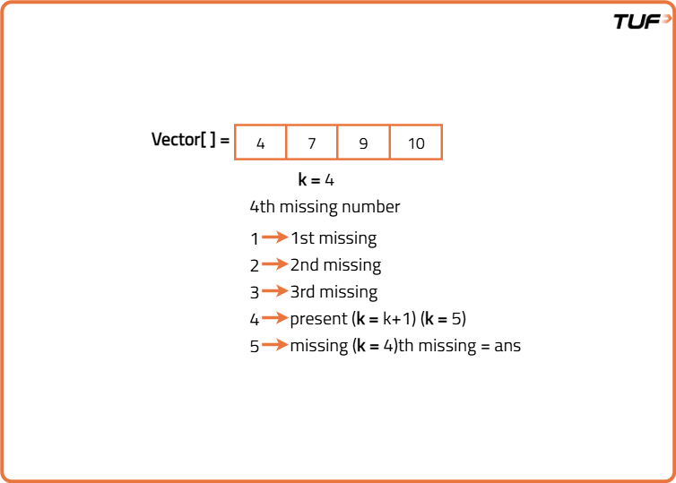
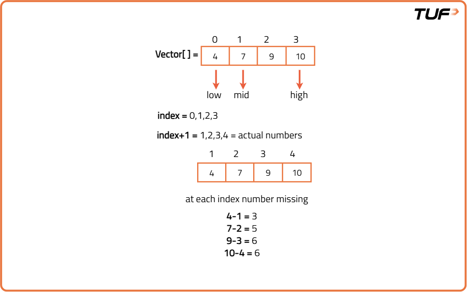
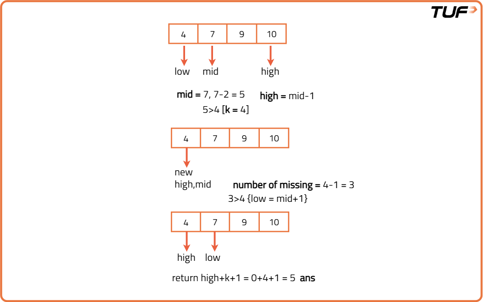

Kth Missing Positive Number
Problem Statement: You are given a strictly increasing array ‘vec’ and a positive integer 'k'. Find the 'kth' positive integer missing from 'vec'.
Examples
Example 1:
Input Format: vec[]={4,7,9,10}, k = 1
Result: 1
Explanation: The missing numbers are 1, 2, 3, 5, 6, 8, 11, 12, ……, and so on. Since 'k' is 1, the first missing element is 1.
Example 2:
Input Format: vec[]={4,7,9,10}, k = 4
Result: 5
Explanation: The missing numbers are 1, 2, 3, 5, 6, 8, 11, 12, ……, and so on. Since 'k' is 4, the fourth missing element is 5.
Disclaimer: Here is the practice link to help you assess your knowledge better. It's highly recommend trying to solve it before looking at the solution.

Brute Force Approach
Algorithm
- We will use a loop to traverse the array.
- Inside the loop,
- If vec[i] <= k: we will simply increase the value of k by 1.
- Otherwise, we will break out of the loop.
- Finally, we will return the value of k.

Code
#include <bits/stdc++.h>
using namespace std;
// Class to find the k-th missing number in a sorted array
class MissingKFinder {
public:
// Function to find the k-th missing number
int missingK(vector<int> vec, int n, int k) {
for (int i = 0; i < n; i++) {
if (vec[i] <= k) {
k++; // If current number is less than or equal to k, increment k
} else {
break; // Stop when we reach a number greater than k
}
}
return k; // Return the final value of k which is the missing number
}
};
int main() {
vector<int> vec = {4, 7, 9, 10}; // Sorted input array
int n = vec.size(); // Size of the array
int k = 4; // We are looking for the 4th missing number
MissingKFinder finder; // Create object
int ans = finder.missingK(vec, n, k); // Call method
cout << "The missing number is: " << ans << "\n"; // Output the result
return 0;
}
Complexity Analysis
Time Complexity: O(N), where N = size of the given array.
Space Complexity: O(1), no extra space used.
Optimal Approach
Algorithm
We cannot apply binary search on the answer space here as we cannot assure which missing number has the possibility of being the kth missing number. That is why, we will do something different here. We will try to find the closest neighbors (i.e. Present in the array) for the kth missing number by counting the number of missing numbers for each element in the given array.
Algorithm
- Start by setting two markers: one at the beginning and one at the end of the list.
- Keep checking the middle position between the two markers by taking their average.
- Count how many numbers are missing up to that middle position by subtracting the expected number from the actual number found at that point.
- If the number of missing values is less than the desired position, move your focus to the right side of the list by shifting the beginning marker ahead.
- If not, move your focus to the left side by shifting the end marker backward.
- Once you've narrowed down the search and exited the loop, return the final answer by adding the desired position to the last marker you checked (plus one).


Code
#include <bits/stdc++.h>
using namespace std;
// Class to find the k-th missing number using binary search
class MissingKFinder {
public:
// Function to return the k-th missing number
int missingK(vector<int> vec, int n, int k) {
int low = 0, high = n - 1;
// Perform binary search
while (low <= high) {
int mid = (low + high) / 2;
// Calculate how many numbers are missing till vec[mid]
int missing = vec[mid] - (mid + 1);
if (missing < k) {
low = mid + 1; // Move right to find more missing numbers
} else {
high = mid - 1; // Move left to find a smaller valid index
}
}
// After loop, 'high' points to the largest index such that
// number of missing elements till there < k
return k + high + 1;
}
};
int main() {
vector<int> vec = {4, 7, 9, 10}; // Sorted array
int n = vec.size(); // Size of array
int k = 4; // k-th missing number to find
MissingKFinder finder; // Create object
int ans = finder.missingK(vec, n, k); // Call method
cout << "The missing number is: " << ans << "\n"; // Print result
return 0;
}
Complexity Analysis
Time Complexity: O(logn), used for typical binary search
Space Complexity: O(1), no extra space used